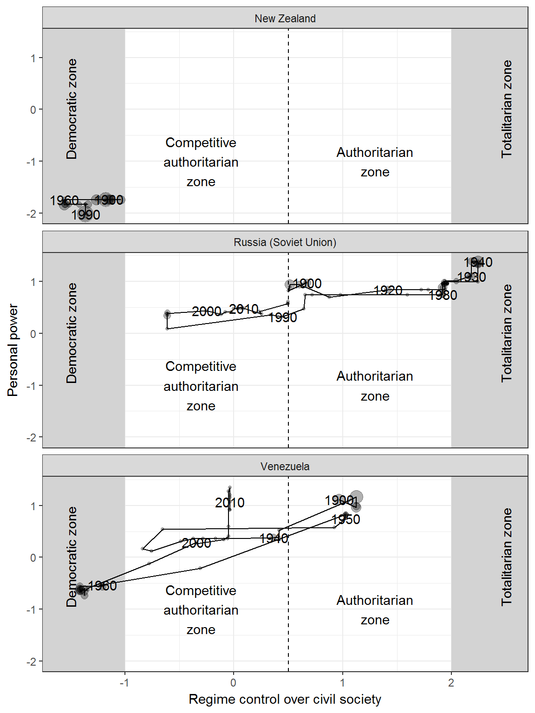
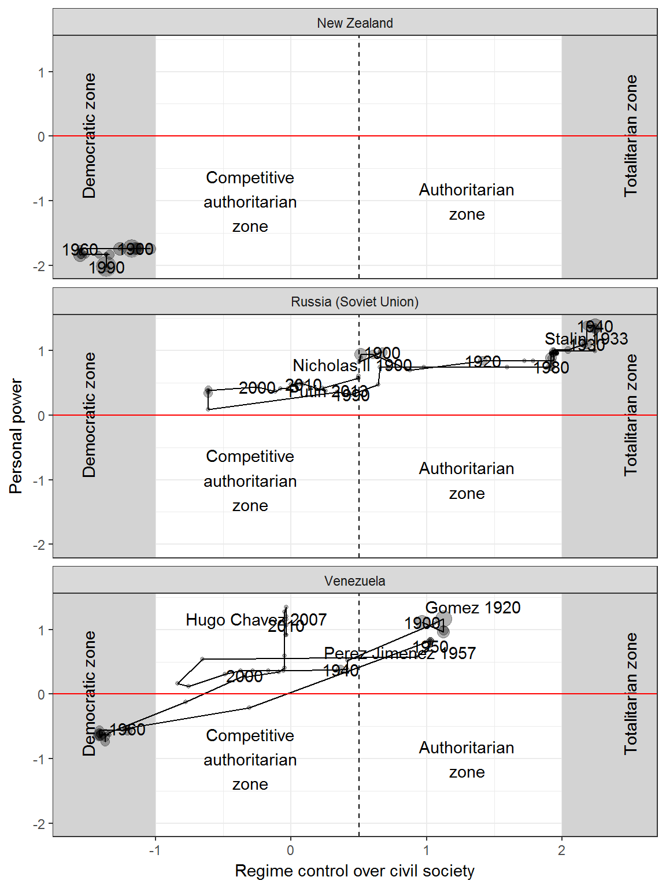

This vignette shows how to replicate and extend the charts in chapter 1 of my book Non-democratic Politics: Authoritarianism, Dictatorships, and Democratization (Palgrave Macmillan, 2016). It assumes that you have downloaded and installed the replication package as follows:
if(!require(devtools)) {
install.packages("devtools")
}
devtools::install_github('xmarquez/AuthoritarianismBook')It also assumes you have the dplyr and ggplot2 packages installed:
if(!require(dplyr)) {
install.packages("dplyr")
}
if(!require(ggplot2)) {
install.packages("ggplot2")
}This figure plots the “regime trajectories” of three countries through a two-dimensional space defined by a “control over society” axis (the x axis, ranging from the “maximal pluralism” of a democratic regime) and a “personal power” axis (the y axis, ranging from minimal personal power - maximal institutional control - to maximal personal power).
The measure of “social control” is the the “core civil society index” (v2xcs_ccsi) from the V-Dem dataset, version 6.1 (Coppedge Michael, John Gerring, Staffan I. Lindberg, Svend-Erik Skaaning, Jan Teorell, et al. 2016a). This is a measure of “how robust is civil society,” described as follows by the V-Dem codebook:
The core civil society index (CCSI) is designed to provide a measure of a robust civil society, understood as one that enjoys autonomy from the state and in which citizens freely and actively pursue their political and civic goals, however conceived. (Coppedge Michael, John Gerring, Staffan I. Lindberg, Svend-Erik Skaaning, Jan Teorell, et al. 2016b, 61)
The codebook also notes that “the index is formed by taking the point estimates from a Bayesian factor analysis model of the indicators for CSO [civil society organization] entry and exit (v2cseeorgs), CSO repression (v2csreprss) and CSO participatory environment (v2csprtcpt).” The index is described in more detail in a working paper by Bernhard et al. (2015). First thing to do is to load this dataset ans select the variable we need:
library(AuthoritarianismBook)
library(dplyr)
library(ggplot2)
civil_society <- vdem %>%
select(country_name, GWn, year, in_system, v2xcs_ccsi, v2xcs_ccsi_codelow, v2xcs_ccsi_codehigh) This index ranges from 0-1, where 0 means that civil society is maximally constrained and 1 means that civil society is minimally constrained. The index is available for 173 countries and 16430 country-years:
library(knitr)
civil_society %>%
filter(!is.na(v2xcs_ccsi)) %>%
summarise(num_countries = n_distinct(country_name),
country_years = n(),
mean_v2xcs_ccsi = mean(v2xcs_ccsi),
max_v2xcs_ccsi = max(v2xcs_ccsi),
min_v2xcs_ccsi = min(v2xcs_ccsi)) %>%
kable(digits = 2,
col.names = c("Number of countries","Country-years", "Mean", "Max", "Min"))| Number of countries | Country-years | Mean | Max | Min |
|---|---|---|---|---|
| 173 | 16430 | 0.47 | 0.98 | 0.01 |
To use it in the figure, I first transform the index to a “normalized” scale using the normal quantile function. (The original index uses the normal distribution function to transform the results of the bayesian analysis into a 0-1 probability scale; applying the normal quantile function simply reverses this process).
civil_society <- civil_society %>%
mutate(civil_society = qnorm(1 - v2xcs_ccsi),
civil_society_high = qnorm(1 - v2xcs_ccsi_codelow),
civil_society_low = qnorm(1 - v2xcs_ccsi_codehigh))Now the index has mean around 0 and standard deviation 1, and higher values correspond to more control over civil society instead of less:
civil_society %>%
filter(!is.na(v2xcs_ccsi)) %>%
summarise(num_countries = n_distinct(country_name),
country_years = n(),
mean_civil_society = mean(civil_society),
sd_civil_society = sd(civil_society)) %>%
kable(digits = 2,
col.names = c("Countries","Country-years", "Mean", "SD"))| Countries | Country-years | Mean | SD |
|---|---|---|---|
| 173 | 16430 | 0.08 | 1.03 |
The measure of personal power comes from a latent variable analysis of several sources: the V-dem indexes of legislative and judicial constraints on the executive and of executive corruption; Polity IV’s measure of executive constraints (Marshall, Gurr, and Jaggers 2010); Geddes, Wright, and Frantz’s 2014 indicator of personalism (Geddes, Wright, and Frantz 2014); Kailitz 2013’s indicator of personalism (Kailitz 2013); Magaloni, Chu, and Min 2013’s experimental measure of personalism (Magaloni, Chu, and Min 2013); and Wahman, Teorell, and Hadenius 2013’s measure of mean executive turnover in non-democratic regimes (Wahman, Teorell, and Hadenius 2013). The construction of this index is described in detail in the vignette “An Index of Personal Power” The index value is in a normalized scale with mean around 0 and standard deviation of around 1, with larger values indicating less personal power:
personal_scores %>%
filter(!is.na(z1)) %>%
summarise(num_countries = n_distinct(country_name),
country_years = n(),
mean_personal_power = mean(z1),
sd_personal_power = sd(z1),
max_personal_power = max(z1),
min_personal_power = min(z1)) %>%
kable(digits = 2,
col.names = c("Countries","Country-years", "Mean", "SD", "Max", "Min"))| Countries | Country-years | Mean | SD | Max | Min |
|---|---|---|---|---|---|
| 215 | 22597 | 0 | 0.89 | 2.51 | -2.46 |
This measure of personal power is explored in more detail in the vignette for chapter 4. Note that this index is only a very approximate measure of personal power - there are some problems with the original measures of personalism used to construct it - but it’s good enough to illustrate some trajectories through regime space.
To create the figure we first invert the polarity of the personal power index (so that larger values indicate more personal power) and then join both datasets:
personal_scores <- personal_scores %>%
mutate(personal_power = -z1,
personal_power_high = -pct025,
personal_power_low = -pct975)
data <- inner_join(civil_society, personal_scores)## Joining, by = c("country_name", "GWn", "year", "in_system")We can now plot the figure for New Zealand, Russia (Soviet Union), and Venezuela:
countries <- c("New Zealand","Venezuela","Russia (Soviet Union)")
fig1.1 <- ggplot(data = data %>%
filter(country_name %in% countries,
in_system),
aes(x=civil_society,y = personal_power)) +
geom_rect(inherit.aes=FALSE, # Plots the grey
xmin = 2, # areas that say
xmax= 3, # "Totalitarian zone"
ymin = min(data$personal_power, na.rm = TRUE), # and "Authoritarian zone"
ymax = max(data$personal_power, na.rm = TRUE),
fill = "lightgrey") +
geom_rect(inherit.aes=FALSE,
xmin = -1,
xmax= -2,
ymin = min(data$personal_power, na.rm = TRUE),
ymax = max(data$personal_power, na.rm = TRUE),
fill = "lightgrey") +
geom_path() + # Connects points
geom_count(alpha = 0.3, show.legend=FALSE) +
geom_text(data = data %>% # Adds labels at
filter(country_name %in% countries, # 10-year intervals
(year %% 10) == 0),
aes(label = year),
check_overlap = TRUE) +
facet_wrap(~country_name, ncol=1) +
theme_bw() +
geom_vline(xintercept = 0.5, linetype = 2) +
annotate("text", x = 2.5, y = 0, label = "Totalitarian zone", angle = 90) +
annotate("text", x = -1.5, y = 0, label = "Democratic zone", angle = 90) +
annotate("text", x = -0.3, y = -1, label = "Competitive\nauthoritarian\nzone") +
annotate("text", x = 1.3, y = -1, label = "Authoritarian\nzone") +
labs(y = "Personal power", x = "Regime control over civil society")
fig1.1
To add leader names, we need to use the leader data from Archigos, which we put in country-year format:
library(lubridate)
leader_data <- archigos %>%
group_by(country_name,GWn,leader,startdate,enddate) %>%
do(data.frame(year = year(.$startdate):year(.$enddate))) %>%
group_by(country_name) %>%
arrange(year,enddate)
data <- inner_join(leader_data, data) %>%
arrange(country_name, year)## Joining, by = c("country_name", "GWn", "year")# This is a helper function for finding local peaks in personal power:
findpeaks <- function(vec,bw=1,x.coo=c(1:length(vec)))
{
pos.x.max <- NULL
pos.y.max <- NULL
pos.x.min <- NULL
pos.y.min <- NULL
for(i in 1:(length(vec)-1)) { if((i+1+bw)>length(vec)){
sup.stop <- length(vec)}else{sup.stop <- i+1+bw
}
if((i-bw)<1){inf.stop <- 1}else{inf.stop <- i-bw}
subset.sup <- vec[(i+1):sup.stop]
subset.inf <- vec[inf.stop:(i-1)]
is.max <- sum(subset.inf > vec[i]) == 0
is.nomin <- sum(subset.sup > vec[i]) == 0
no.max <- sum(subset.inf > vec[i]) == length(subset.inf)
no.nomin <- sum(subset.sup > vec[i]) == length(subset.sup)
if(is.max & is.nomin){
pos.x.max <- c(pos.x.max,x.coo[i])
pos.y.max <- c(pos.y.max,vec[i])
}
if(no.max & no.nomin){
pos.x.min <- c(pos.x.min,x.coo[i])
pos.y.min <- c(pos.y.min,vec[i])
}
}
return(pos.x.max)
}We also need the package ggrepel:
if(!require(ggrepel)) {
install.packages("ggrepel")
}Now we’re ready to add labels:
label_data <- data %>%
filter(!is.na(personal_power),
country_name %in% countries) %>%
group_by(country_name) %>%
mutate(local_personal_max = (personal_power %in% personal_power[findpeaks(personal_power, bw = 20)]),
local_personal_max = ifelse(country_name == "New Zealand",FALSE,local_personal_max)) %>%
filter(local_personal_max) %>%
distinct(leader, personal_power, local_personal_max, .keep_all = TRUE)
fig1.1 +
geom_text_repel(data = label_data,
aes(x = civil_society,
y = personal_power,
label=paste(leader,year)),
inherit.aes = FALSE) +
geom_hline(yintercept = 0, color = "red")
Bernhard, Michael, Eitan Tzelgov, Dong-Joon Jung, Michael Coppedge, and Staffan I. Lindberg. 2015. “The Varieties of Democracy Core Civil Society Index.” 13. V-Dem Institute.
Coppedge, Michael, John Gerring, Staffan I. Lindberg, Svend-Erik Skaaning, Jan Teorell, David Altman, Michael Bernhard, et al. 2016a. “V-Dem [Country-Year/Country-Date] Dataset, Version 6.1.” Dataset. Varieties of Democracy (V-Dem) Project. https://www.v-dem.net/en/data/data-version-6-1/.
Coppedge, Michael, John Gerring, Staffan I. Lindberg, Svend-Erik Skaaning, Jan Teorell with David Altman, Michael Bernhard, M. Steven Fish, et al. 2016b. “V-Dem Codebook V6.” Varieties of Democracy (V-Dem) Project.
Geddes, Barbara, Joseph Wright, and Erica Frantz. 2014. “Autocratic Breakdown and Regime Transitions: A New Data Set.” Perspectives on Politics 12 (1): 313–31. doi:10.1017/S1537592714000851.
Kailitz, Steffen. 2013. “Classifying Political Regimes Revisited: Legitimation and Durability.” Democratization 20 (1): 39–60. doi:10.1080/13510347.2013.738861.
Magaloni, Beatriz, Jonathan Chu, and Eric Min. 2013. “Autocracies of the World, 1950-2012 (Version 1.0).” Dataset. http://cddrl.fsi.stanford.edu/research/autocracies_of_the_world_dataset.
Marshall, Monty G., Ted Robert Gurr, and Keith Jaggers. 2010. “Polity IV Project: Political Regime Characteristics and Transitions, 1800-2009.” Data set. Center for Systemic Peace. http://www.systemicpeace.org/inscr/inscr.htm.
Wahman, Michael, Jan Teorell, and Axel Hadenius. 2013. “Authoritarian Regime Types Revisited: Updated Data in Comparative Perspective.” Contemporary Politics 19 (1): 19–34. https://sites.google.com/site/authoritarianregimedataset/data.